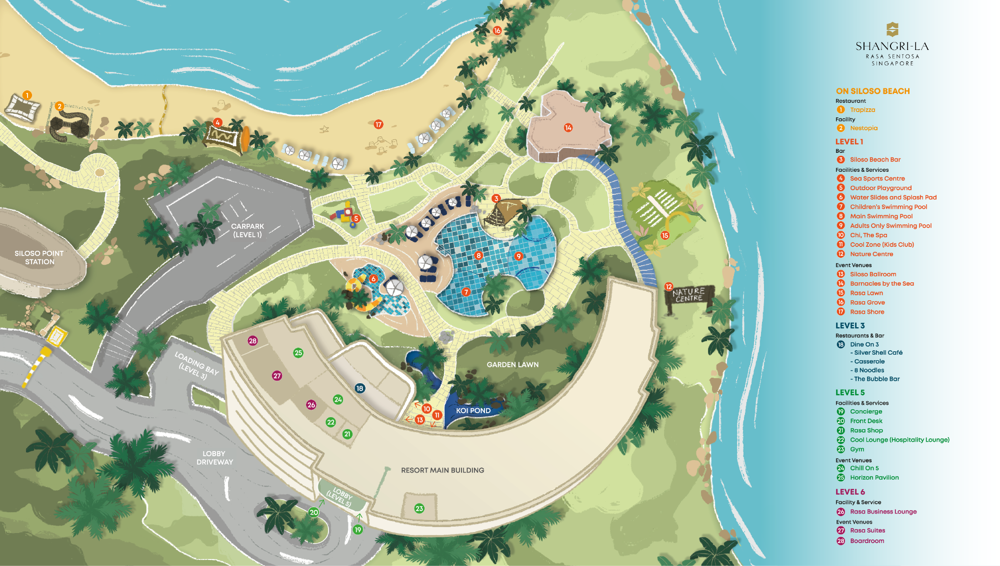

SoCC 2026 · Arrival guide
18–20 November 2026 · Sentosa, Singapore · All times SGT (UTC+8)
Your destination
Shangri-La Rasa Sentosa, Singapore101 Siloso Road, Sentosa, Singapore 098970
Conference: Siloso Ballroom, Level 1
Track A: Siloso 2 · Track B: Siloso 3 · Hotel lobby: Level 5
From Changi Airport (SIN)
Grab or taxi is the simplest direct option. Allow approximately 30–40 minutes by car, depending on traffic, plus time for immigration, baggage and pickup.
Taking Grab
Grab is a ride-hailing app used in Singapore, similar to Uber.
- Install the Grab app and set up your account before travelling. You’ll need internet access to book.
- After collecting your bags, select a car ride and enter “Shangri-La Rasa Sentosa”. Check the address is 101 Siloso Road—there are other Shangri-La hotels in Singapore.
- Select your terminal and pickup point. Review the fare, payment method and vehicle capacity for your luggage before confirming. Prices vary with demand; use the app’s current quote.
- Follow the app’s pickup directions and airport Arrival / Ride-Hailing Pick-up signs. Match the vehicle plate to your booking before boarding.
Grab pickup is separate from the taxi queue. Check the exact terminal, level and door shown in the app. Grab airport guide ↗
Taxi: Follow signs to the taxi stand at your arrival terminal and show the hotel name and address above. Fares are metered; airport, peak-hour and late-night surcharges may apply.
MRT + hotel shuttle: Travel to HarbourFront MRT, then go to VivoCity, Lobby F, Level 1 for the complimentary resort shuttle. Check current train routing and the shuttle timetable before setting out.
Morning arrivals: The supplied January 2024 shuttle timetable starts at 11:15 a.m. from VivoCity, too late for the conference’s 9:00 a.m. starts. Reconfirm with the hotel; use a taxi or Grab for an early arrival. Shuttle seats are first come, first served.
Conference essentials
| Date | Start of day | Day ends |
|---|---|---|
| Wed 18 Nov | 09:00 opening remarks 09:30 keynote · Haibo Chen | 17:40 |
| Thu 19 Nov | 09:00 keynote · Joseph M. Hellerstein | 17:25 |
| Fri 20 Nov | 09:00 parallel sessions | 17:20 Closing: 16:50 |
Keynotes: Siloso 2 + 3. Two parallel tracks run throughout the conference. Times above follow the published program and may change.
View full program at a glance ↗At the resort
Hotel check-in: from 15:00 · Check-out: by 12:00
Hotel / concierge: +65 6275 0100 · From your room, dial 0.
Ask the concierge for directions to Siloso Ballroom and the latest shuttle schedule.
View resort map (2025)

Siloso Ballroom: marker 13 · Front desk: marker 20 · Concierge: marker 19.